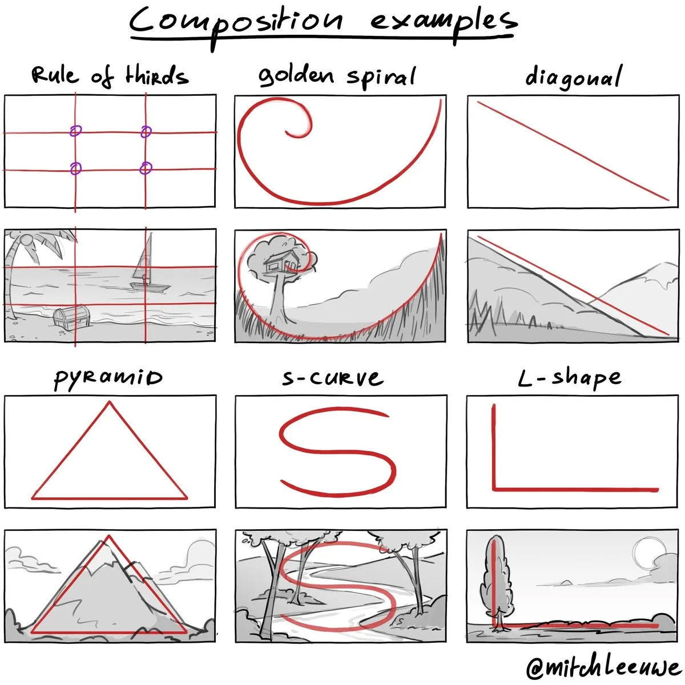
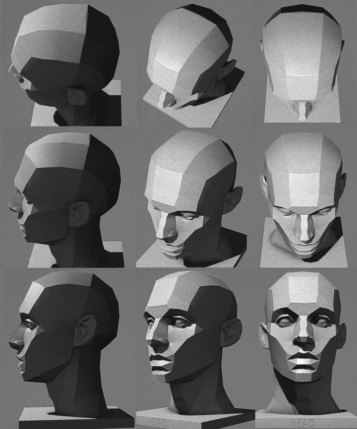

Nayeli Guerrero
Diseñadora y creadora digital en modelado 3D y 2D, edición fotográfica y diseño visual. Transformo ideas en experiencias visuales únicas.

Diseñadora y creadora digital en modelado 3D y 2D, edición fotográfica y diseño visual. Transformo ideas en experiencias visuales únicas.
Soy Nayeli Guadalupe Guerrero Tapia, tengo 19 años y estudio en la carrera de Entornos Virtuales y Negocios Digitales, me gusta el diseño y la creación del diseño digital como también la funcionalidad del modelado 2D y 3D. Mi objetivo es seguir aprendiendo, experimentando con nuevas tecnologías y aportar soluciones creativas e innovadoras en cada proyecto en el que participo.
Más allá del software utilizado, todo proyecto gráfico requiere bases sólidas de composición para comunicar un mensaje claro. Dominar el equilibrio entre los elementos visuales permite captar la atención del espectador y transmitir emociones de forma efectiva.

Selección de paletas armónicas y contrastes adecuados para generar atmósferas e identidad visual.

Distribución estratégica de los elementos en el espacio mediante reglas de proporción y jerarquía.

Uso de luces, sombras y texturas para dar profundidad y realismo a cualquier pieza gráfica.